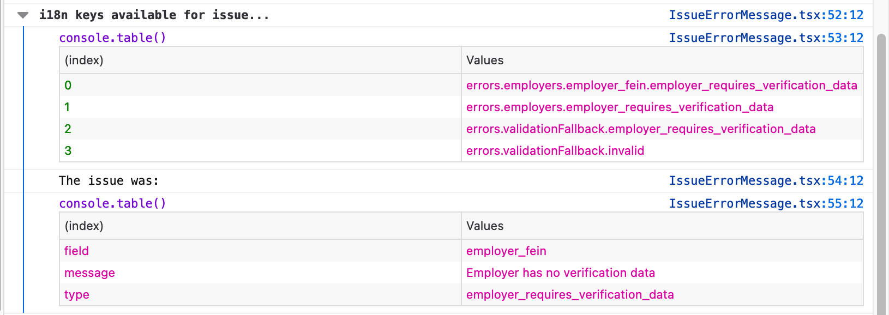

Error handling
TLDR:
useErrorsLogicis source of truth for errors state management.- Portal i18n files are source of truth for error messages, not the API.
Below represents the flow of a request and how an API error response flows back through the app and is rendered to the user:
flowchart TB
subgraph pages
_app
page[Question Page<br/> e.g. name.tsx]
end
subgraph components
PageWrapper
ErrorsSummary
ErrorMessage
IssueErrorMessage
end
subgraph hooks[ ]
appHook[(useAppLogic)]
errorsHook[(useErrorsLogic)]
apiHook[(API Hook <br /> e.g. useClaimsLogic)]
end
subgraph api
BaseApi
end
apiHook -- request --> api
BaseApi -- throw Error --> apiHook
apiHook -- catchError --> errorsHook
errorsHook --> appHook
appHook --> pages
_app --> PageWrapper
PageWrapper --> ErrorsSummary -- for each error --> ErrorMessage -- for each issue --> IssueErrorMessage
page -- for each field --> IssueErrorMessage
Error classes
Errors are represented by subclasses of the global Error object. See errors.ts.
BaseAPI
Unsuccessful API requests, due to system or validation errors, will receive an errors array in the response body. When errors are present, the BaseAPI module throws a ValidationError. This ValidationError includes an issues field which stores the API response's errors.
If no errors were present on the API error response body, the BaseAPI module will throw an error based on the response status code, such as NotFoundError, ForbiddenError, etc.
API hooks
API hooks, like useClaimsLogic, are responsible for catching any errors thrown by the API request. A typical pattern for this looks like:
async updateClaim(patchData) {
try {
// Send the API request
await myApi.update(patchData)
} catch (error) {
// Handle any API errors
errorsLogic.catchError(error)
}
}
Errors hook
The useErrorsLogic hook is the source of truth for errors state management.
To handle an error and display its message in the UI, call the error logic hook's catchError method. Custom handlers can be added for specific error subclasses, if necessary.
Error messages & internationalization (i18n)
All error messages should be internationalized. This means every error message should have a key/value mapping in the errors object of our internationalization file(s), and we shouldn't rely on the default error message defined on the API's error response.
I18n keys
The i18n keys for error messages are automatically generated, based on:
- Which API endpoint the error is thrown from
- The error instance type (e.g.
ValidationError,NotFoundError, etc.) - And if the error has an
issuesfield, then the issue'stype,fieldandruleproperties.
The logic for the last point above is somewhat difficult to describe in plain language, so it may be easier to reference the code itself: check out getI18nKeysForIssue in the IssueErrorMessage component.
If you're unsure what i18n keys will be generated for an issue, you can trigger the error in local development and view the console to see what keys it makes available:

If an i18n key isn't found for the API issue, the app falls back to the original error message sent from the API. But again, we should always have an internationalized error message, and this fallback behavior should not be relied upon.
Links and HTML in error messages
Error messages support a subset of HTML elements and links. To safelist a new HTML element or link, update the object in useErrorI18nComponents.
UI Components
Various UI components are responsible for internationalizing and displaying errors to the user. Below is a quick summary. View additional details and examples in Storybook.
<ErrorsSummary>is part of our global page layout. When errors are present, it lists every error. Its heading is dynamic, based on the number of errors.<IssueErrorMessage>- Given an entry in an error'sissuesarray, this component renders a single internationalized message.
Inline errors
Each page has access to errorsLogic via the default appLogic prop.
If an error includes an issues entry that is associated with a specific field on the page, you can render the issue's message inline by setting the field component's errorMsg prop.
The easiest way to do this is by using the useFunctionalInputProps hook to set the common props for your fields, one of which is errorMsg.
A common pattern for forms in our app looks like this:
const { formState, updateFields } = useFormState({
first_name: claim.first_name,
});
const getFunctionalInputProps = useFunctionalInputProps({
errors: props.appLogic.errors,
formState,
updateFields,
});
return (
<form>
<InputText
{...getFunctionalInputProps("first_name")}
label={t("pages.claimsName.firstNameLabel")}
/>
</form>
);
Alternatively, if you're not using useFunctionalInputProps, you can use the findErrorMessageForField utility to return the message for a specific field:
<InputText
errorMsg={findErrorMessageForField(errors, "first_name")}
name="first_name"
...